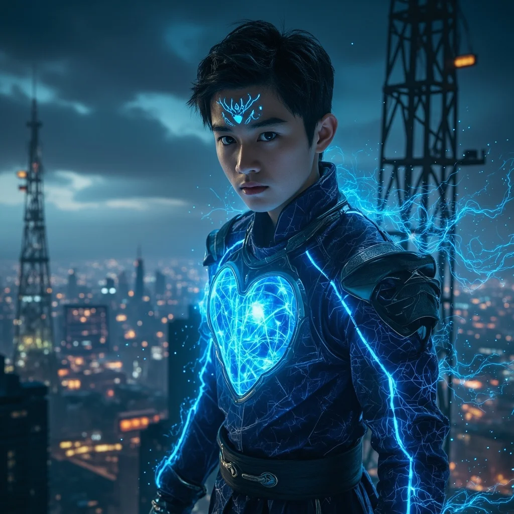
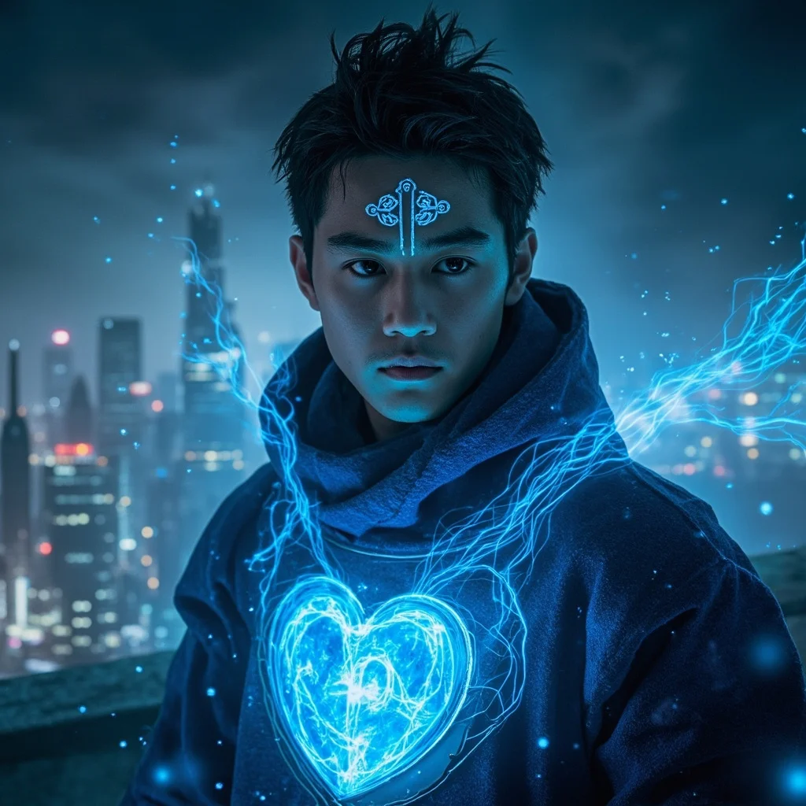
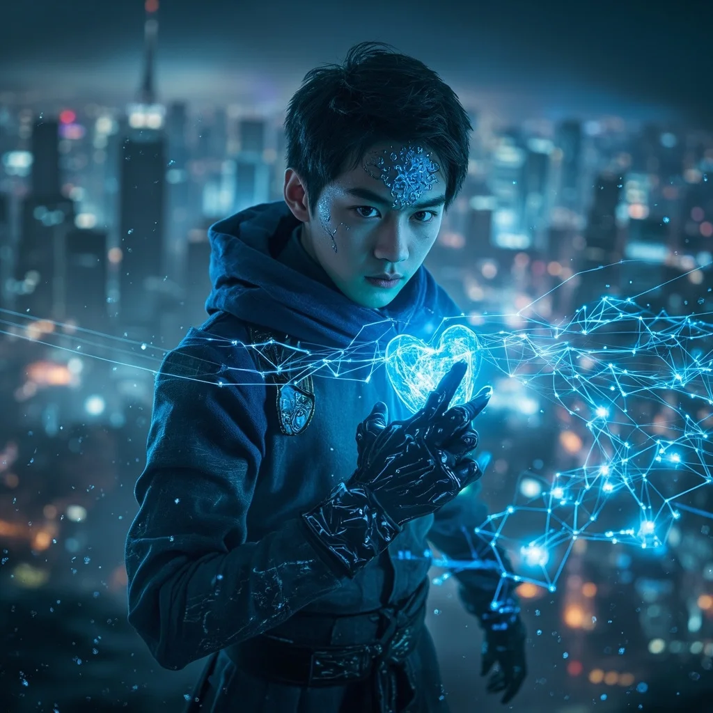
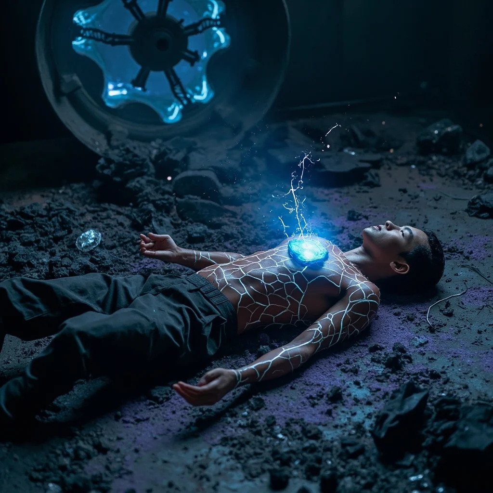

第69章：能量風暴
🎧 點擊播放有聲朗讀
🎧 點擊播放有聲朗讀
林塵站在廢棄信號塔頂端，夜風吹動身上的納米纖維道袍。靈芯系統發出尖銳警告——地下三千米處檢測到天災級能量異常，數十條靈脈正在瘋狂震顫。整個城市的能量流動以半透明數據網格形式呈現在他眼前，正常應如江河般平穩的靈氣，此刻卻如失控的野馬。

林塵啟動全身裝備，高周波劍在前方開路，如流星般射向地面。他在空中調整姿態，切開混凝土和鋼筋切入舊時代地鐵維修井。下降途中，靈芯系統不斷更新數據：檢測到多重靈能屏障、23個武裝生命體信號、未知高維能量反應。前方是一扇刻著混沌教派標記的厚重合金門。

直徑超過百米的球形空間中央，懸浮著一顆不斷脈動的黑色晶體。二十三名混沌教徒圍繞晶體盤坐，他們的身體已半能量化，皮膚下流淌著暗紫色光流。黑色晶體內部，一道細小裂縫正在緩緩張開——裂縫另一側是無法形容的高維空間碎片。混沌教派試圖通過能量風暴打開「裂隙」。

林塵大喝「住手！」能量翼全力推進直衝中央晶體。三名教徒同時睜眼，沒有瞳孔只剩純粹能量光暈，三道暗紫色能量束從不同角度射來。林塵解除安全限制，靈能核心過載模式啟動，道袍浮現電路紋路，高周波劍震動頻率突破千萬赫茲。一劍簡單直刺，凝聚所有修為與決心，劍尖觸及黑色晶體，時間彷彿靜止，然後——爆炸。

黑色晶體碎裂，裂縫癒合，但引爆程序無法逆轉。失控的靈氣在封閉空間內瘋狂旋轉。林塵啟動空間折躍會讓風暴擴散到地面，他做出瘋狂決定——把這些能量全部吞下去。靈能吸收模式啟動，每個細胞都在尖叫，經脈像要炸裂。當最後一絲狂暴靈氣被吸收時，林塵倒在地上，身體表面佈滿裂痕般的能量紋路，每一次呼吸都噴出細小電火花。